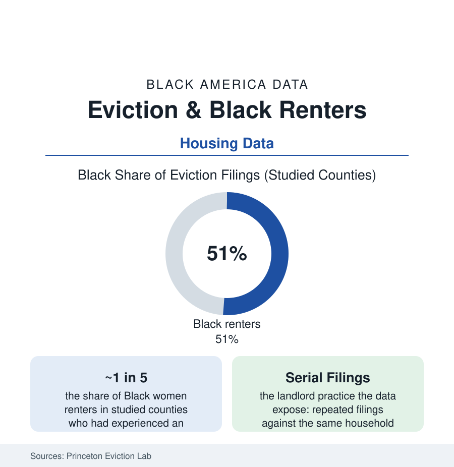

Black Census
Eviction and Black Renters: The Court Date Behind the Housing Numbers
Black renters — above all Black women — face America's highest eviction filing rates, in some counties a majority of all filings. The Eviction Lab and court-record data.

Behind the homeownership and rent-burden numbers stands a court system processing millions of eviction filings a year, and its records carry the housing file's sharpest demographic signature: in the counties the Princeton Eviction Lab has studied most deeply, Black renters account for roughly half of all eviction filings while forming under a third of renter households — and Black women alone account for a share of filings that exceeds their population share several times over. An eviction filing is not a statistic in a family's life; it is a court date, a record that follows every future application, and frequently the first step to the street. This article reads the filings data.
The Filing Map: Who Gets Taken to Court
The Eviction Lab's national database (built from tens of millions of court records) and the city-level studies draw the pattern's mechanics: filings concentrate in the large corporate-owned complexes of the Sun Belt metros (the Atlanta file's serial-filing landlords — the research identifying single companies filing against a quarter or more of their units annually, overwhelmingly in Black neighborhoods), in the weak-tenant-protection jurisdictions (the states where a filing costs a landlord under twenty dollars and a few days' wait), and against the households the rent-burden data predict — the severely cost-burdened, the single mothers of the family file (the Milwaukee study that founded the modern literature found eviction functioning as a routine event in poor Black women's lives, its prevalence compared by the researcher to a common cold's), and the recently-shocked (the job loss and medical events the emergency-savings file counts, arriving at the courthouse within a missed rent cycle). The judgment data narrow somewhat from the filing data — many filings end in payment or dismissal — but the record itself is the punishment the screening file prices: a filing, win or lose, enters the tenant-screening databases and bars the household from the decent stock for years.
Consequences: The Cascade the Data Track
The longitudinal studies follow the filed-against household forward, and the cascade is measured at every step: the moves (forced, doubled-up — the grandparents' households absorbing the displaced, the homelessness counts catching the remainder: families with children, disproportionately Black, the largest group in the shelter census), the children's school changes mid-year (joining the closures article's mobility ledger), the job losses (the court date itself a workday gone; the move a commute broken), the health tolls (the maternal and mental-health studies of evicted mothers — depression rates elevated for years in the follow-ups), and the possessions (the curb and the storage unit, the material wealth of a poor household forfeited in a weekend). The credit file records the judgment; the next application's screening converts it to exclusion; the household descends the housing ladder the data grade — each rung's rent no cheaper, only worse. The researchers' summary statistic for the whole cascade: eviction functions in the data less like a consequence of poverty than like a cause of it, deepening every measure it touches.
The Pandemic Experiment and the Policy Ledger
The COVID era ran the counterfactual at national scale: the federal and state moratoria plus $46 billion in emergency rental assistance (the largest housing-stabilization intervention in the record) held filings to roughly half their historic average in the Eviction Lab's tracker for over a year — in the same cities, with the same landlords and tenants — demonstrating in the data that the filing rate is a policy variable, not a law of nature. The post-moratorium series show filings climbing back toward (and in several Sun Belt metros past) the pre-pandemic lines, with the assistance programs' remnants (the local right-to-counsel programs — whose representation data are the file's brightest line: represented tenants avoiding displacement judgments at rates the city evaluations put at several times the unrepresented rate; the record-sealing statutes now on several states' books; the filing-fee and notice reforms) graded city by city in the tracker. The Household Pulse Survey's household-level data (the 'likelihood of eviction' self-reports, running highest for Black renters through the series) serve as the file's early-warning line.
Reading the Eviction Data
Half the filings, a third of the renters, a record that never expires: eviction is the housing system's point of maximum force applied at its point of maximum vulnerability, and the data name the household at that point with demographic precision — a Black woman, her children, her rent already at half her income. The pandemic proved the rate is chosen by policy. The filings since are the sound of the choice being made the other way, one court date at a time.
More in Black Census
The Black Population of the United States: Size, Definitions, and Distribution
The Black population of the United States totals 52.8 million — 15.4 percent of the nation. How the Census Bureau defines and counts the population, and where it lives.
Black Median Household Income in the United States
Black median household income stands at $56,490 in the Census Bureau's annual income report — how the figure is measured, how it compares, and what drives it.
The Black Poverty Rate: Levels, Children, and the Long Trend
The official Black poverty rate is 17.1 percent — against 11.1 percent nationally and 7.7 percent for non-Hispanic White Americans. How poverty is measured and what the data show.
Source: Princeton Eviction Lab; U.S. Census Bureau Household Pulse Survey; American Community Survey; National Equity Atlas and court-record studies.